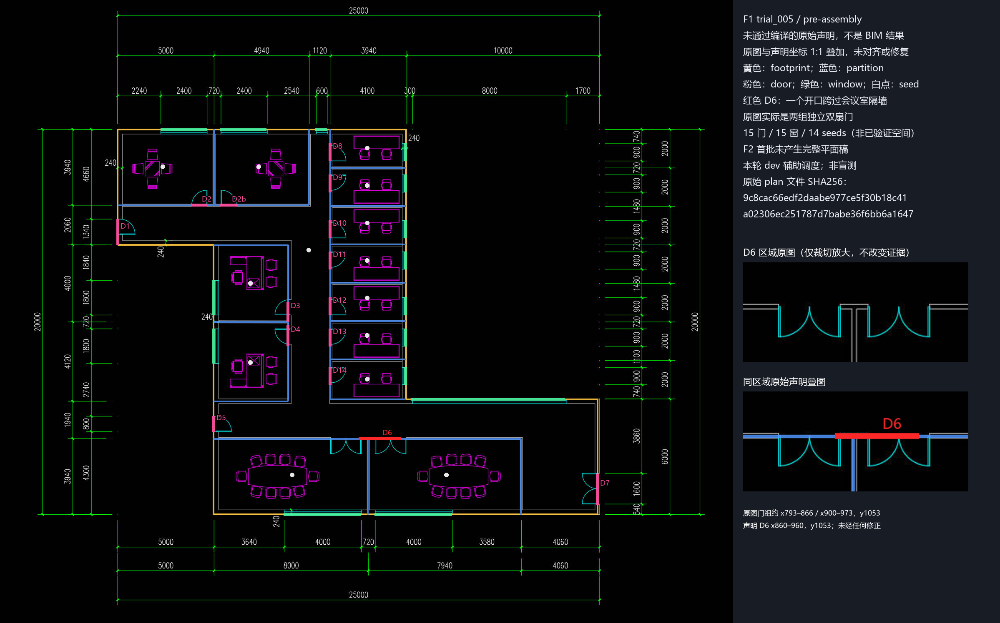

ENERGYPLUS AGENT · 2026-10-10 · SM25
10 cm 规整已接通，完整 BIM 尚未产出
domain v57 首次实测记录。目标是减轻读图和建模负担，同时保留建筑空间划分与关系。本轮结果未达到人工调度完成规整输出的目标。
本次运行已失败收口
四个立面完成；一层止于五份失败声明，二层没有完整声明。没有最终平面、回叠或 BIM 查看页，也没有运行 GT 评价。
62分24.5秒初始化至终止，含收口
99 / 98模型请求 / 返回响应
¥9.1656 + ?已知估算；一超时请求费用未知
4 / 6accepted 读图任务；均为立面
本轮改了什么
| 版本与模式 | runtime v2 保持；domain v57，仅分工路径变化。项目经理人工调度，平面 Qwen3.8-27B / thinking，立面 Qwen3.8-Flash / thinking。 |
|---|
| 实际接通 | 0.1 m共享尺寸链与XYZ落位、原始/采用读数审计、立面规整、跨层标高区分、精简返工上下文；保留拓扑和对象库存守卫。 |
|---|
| 尚未实现 | 专用OCR、自动按全图标注选步长、活动读图员消息注入、缺usage后的正式恢复入口。 |
|---|
| 离线检查 | 全量首次5,969通过、12个旧夹具/指引断言失败；修复后六个完整文件61/61通过，未重复全量。旧稿回放通过不代表本次新看图成功。 |
|---|
逐角色结果
| 任务 | 请求 / 工具 | 结果 |
|---|
| 一层平面 | 21 / 24 | 约33.6分首trial，五次均失败；两组南侧门合并仍未修好，最后请求超时。 |
| 二层平面 | 40 / 51 | 22次看图、28次剖面，无trial；耗尽角色请求额度。 |
| 北立面 | 8 / 13 | 一次schema自修后完成。 |
| 南立面 | 10 / 16 | 完成，原图复核未见实质错误。 |
| 东立面 | 10 / 15 | 完成，门底离地读数保留并采用0.2m。 |
| 西立面 | 10 / 11 | 完成，4.32m窗宽采用4.3m。 |
四立面共118项原始/采用读数，4项改变，最大2.34cm。尚未与平面匹配或装配，不能据此宣布整楼质量通过。
为什么没能继续人工返工
一层超时请求已有结算事件，但没有usage，费用不可算。runtime保留0.370086元预留，同时永久停止后续模型调用；重新打开同次运行仍会停止。二层人工盘点与六尺寸链已经复核，但恢复任务未派发。没有改账本、伪造费用或重开冷启。
原始声明诊断：不是 BIM 结果
下图把一层trial005的原样声明叠回原图，没有移动或修复坐标。红色D6把相邻会议室各自的一组双扇门合成一处跨隔墙开口。另有西上门D1宽度误读，均不能靠10cm规整纠正。

未通过编译 · 非BIM · 原图与原始声明坐标直接叠加。点击可看原尺寸。
质量、用量与比较边界
| ≤5 / 5–10 / 10–30 / >30 cm | 均不可评价。没有最终源BIM；不是零误差。 |
|---|
| 98响应已知用量 | input 4,934,883（cache 3,999,232），output 345,672，provider total 5,280,555；缓存81.04%。另一个超时请求usage未知。 |
|---|
| 与10-09比较 | 旧版经两次人工返工完成，45分32秒 / 98请求 / ¥8.7029。本次失败，62分24.5秒 / 99请求 / 已知¥9.1656。缓存更高未转成出模改善，不宣称提速或降本。 |
|---|
| 下一步 | 优先补完整raw声明的局部修订、近轴接头与尺寸链原子移动，再讨论阶段性人工介入和可审计费用恢复。没有自动追加模型实测。 |
|---|
证据